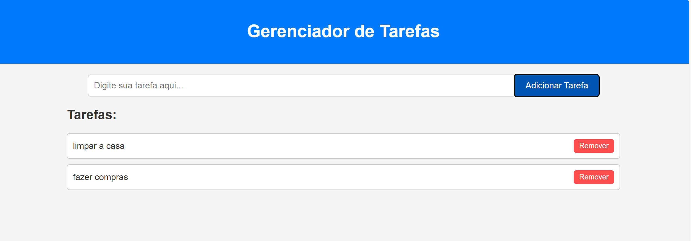
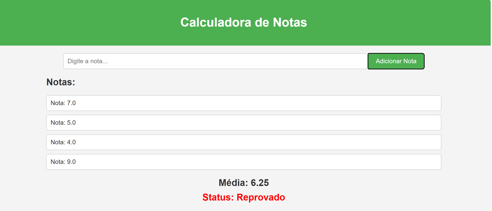

Meus Projetos

Gerenciador de Tarefas
Este projeto é um gerenciador de tarefas simples que permite aos usuários adicionar, marcar como concluídas e remover tarefas. Desenvolvido usando HTML, CSS e JavaScript, ele ajudou a praticar a manipulação de elementos do DOM e o armazenamento de dados no navegador usando localStorage.

Calculadora de Notas
Esta calculadora de notas permite ao usuário inserir notas de diferentes disciplinas, calcular a média e determinar se o aluno foi aprovado ou reprovado. O projeto utiliza HTML, CSS e JavaScript para fornecer uma interface amigável e fácil de usar.